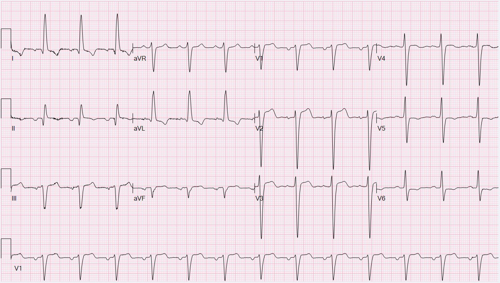
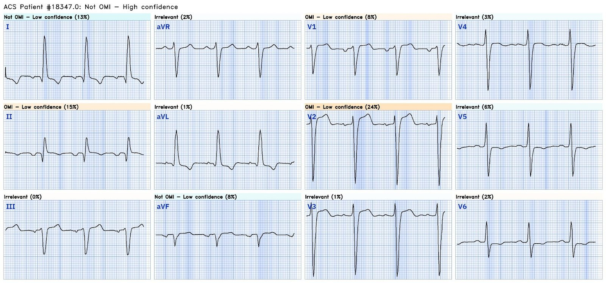
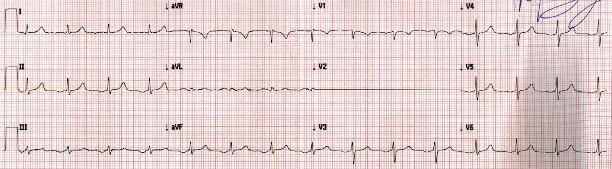
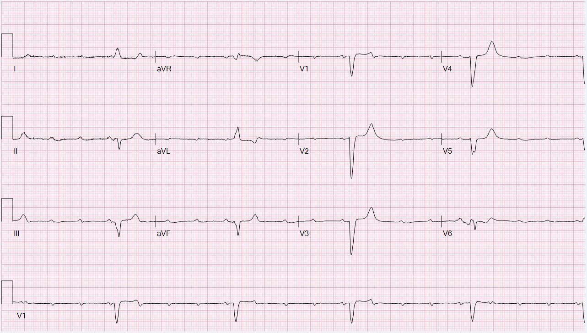
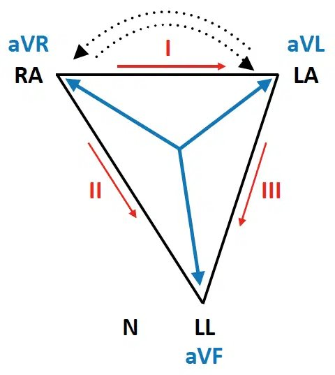
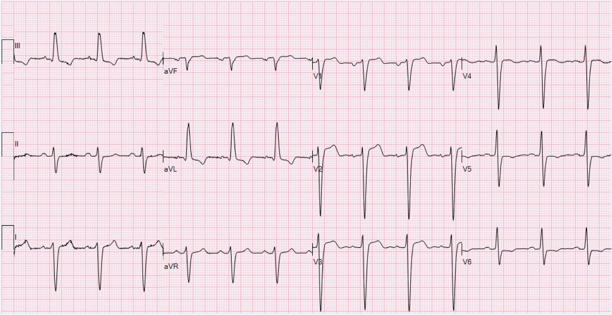
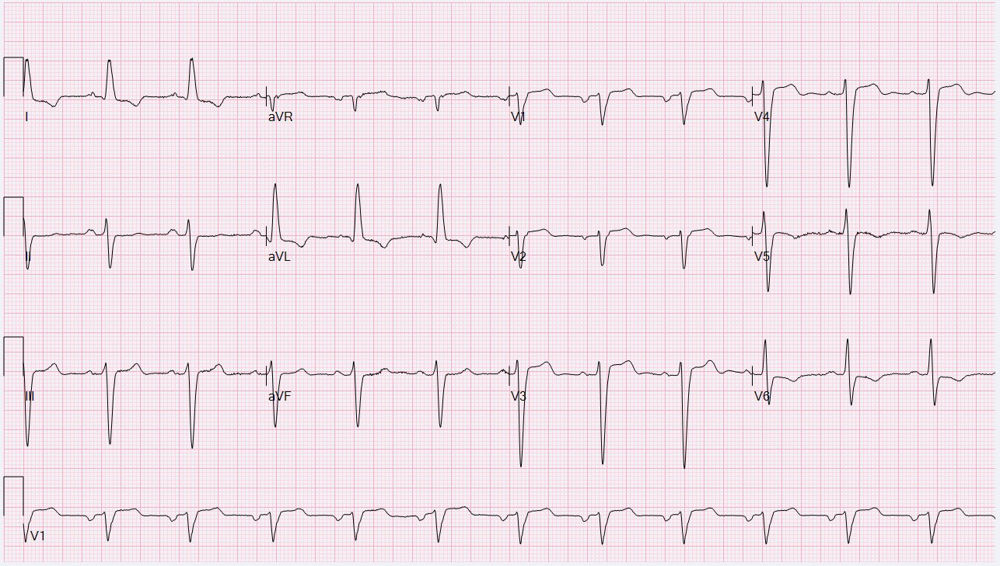
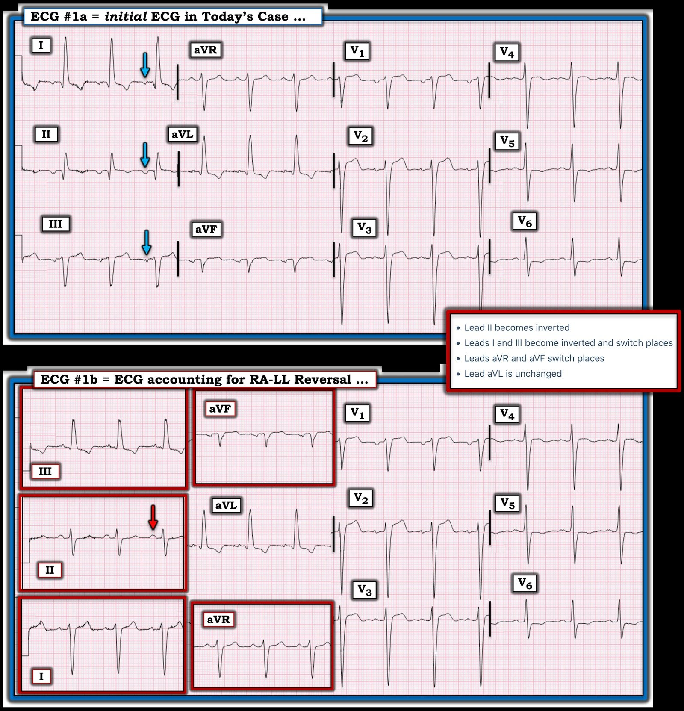
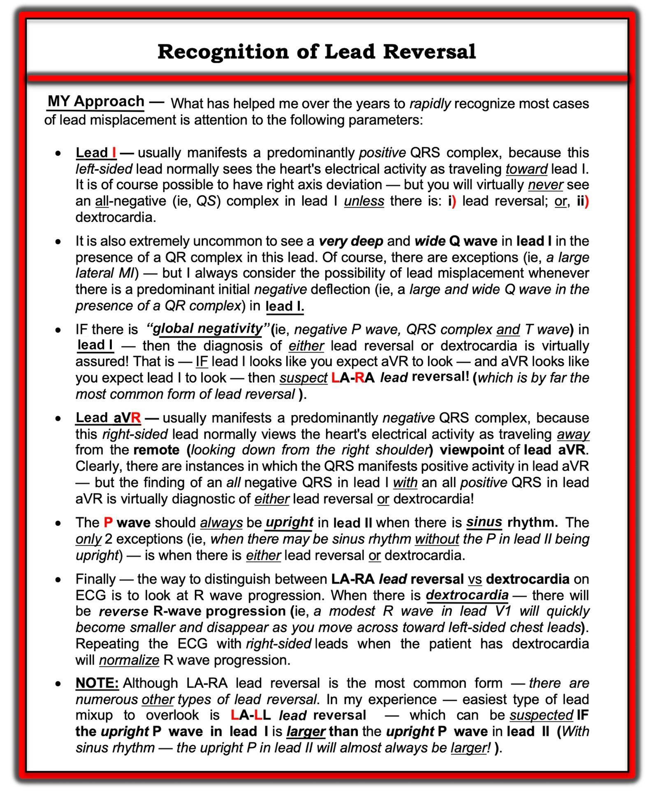
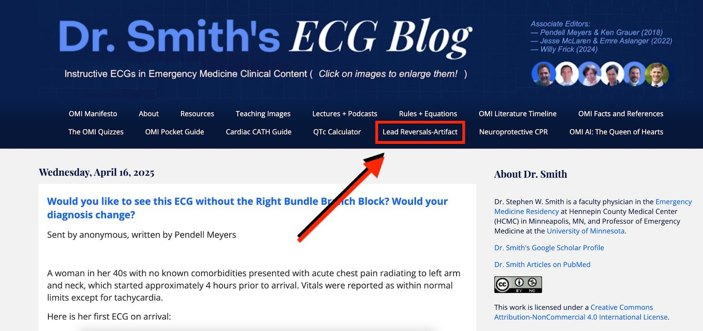

06/01/2024 — Bạn có phát hiện ra vấn đề trong cách ghi điện tâm đồ 12 chuyển đạo này không?
Bản dịch tiếng Việt của bài "Can you spot the problem with the recording of this 12-lead ECG?" – Dr. Smith’s ECG Blog. Giữ nguyên toàn bộ 13 hình ảnh của bản gốc.
Bài viết của Willy Frick
Tôi đang đọc các điện tâm đồ trong hàng chờ thì bản ghi sau xuất hiện. Tôi thường xem hồ sơ bệnh án nếu muốn biết thêm bối cảnh lâm sàng (điều cốt yếu để đọc chính xác). Nhưng trong phần mềm đọc, tất cả những gì tôi được cho biết là đây là một người đàn ông 77 tuổi, và chỉ định là “NSTEMI.”


Bạn nghĩ sao?
Dù không hẳn là có chủ ý, bước xử lý đầu tiên tôi làm khi thấy một điện tâm đồ là phân loại có OMI hay không. Ở đây, tôi không thấy OMI (dù điện tâm đồ này dương tính giả theo tiêu chuẩn STEMI với ST chênh lên (STE) hơn 1 mm một chút ở V1 và STE khoảng 2.5 mm ở V2).
Queen of Hearts cũng thấy không có OMI với độ tin cậy cao.


Sau đó, tôi tiếp tục đọc một cách có hệ thống. Cách tiếp cận của tôi (không có gì độc đáo) là tần số, nhịp, trục, phì đại, các khoảng. (Thời trước khi tôi học cách tìm OMI, hồi tôi còn đếm số ô ST chênh lên, tôi thường để thiếu máu cục bộ lại sau cùng.)
Tần số gần 80, bình thường. Về nhịp, hầu hết mọi người được dạy rằng nhịp xoang được nhận biết bằng “một sóng P trước mỗi QRS và một QRS sau mỗi sóng P.” Đây không phải là điều định nghĩa nhịp xoang. Nhịp xoang được định nghĩa bởi một xung điện khởi phát từ nút xoang nhĩ, nằm ở phần trên nhĩ phải. Mặt sóng khử cực sau đó khử cực tâm nhĩ, lan ra từ phải sang trái và từ trên xuống dưới. Những gì xảy ra sau đó (ví dụ sự hiện diện của QRS do khử cực thất) không cho chúng ta biết gì về nơi nhịp khởi phát.
Dưới đây là hai ví dụ để minh họa điều này:
Ví dụ 1


(Rõ ràng là cáp V2 đã bị tuột, hãy bỏ qua điều đó.) Bản ghi trên cho thấy rõ một sóng P trước mỗi QRS và một QRS sau mỗi sóng P. Nhưng đây không phải là nhịp xoang. Sóng P âm ở các chuyển đạo dưới, nghĩa là xung động đang đi ra xa các chuyển đạo này, tức là nó đang hướng lên phía bắc! Do đó xung động hẳn phải khởi phát từ một vị trí thấp hơn trong tâm nhĩ, có lẽ gần xoang vành.
Ví dụ 2


Hầu hết mọi người sẽ (đúng) nhận ra đây là blốc tim hoàn toàn, nhưng đó không phải là nhịp theo đúng nghĩa. Blốc tim hoàn toàn là trạng thái của nút AV. Lưu ý sóng P dương ở các chuyển đạo I, II và aVF (cho thấy xung động đang đi xuống dưới và sang trái) và đảo ngược ở aVR (cho thấy xung động đang đi ra xa vai phải, một cách nói khác của xuống dưới và sang trái). Do đó đây là nhịp xoang (dù không có mối liên hệ nào giữa sóng P và phức bộ QRS). Tần số nhĩ khoảng 120 nhịp/phút, cho thấy tình trạng cường adrenergic và nguy kịch sinh lý! Đây là nhịp nhanh xoang (nhịp) kèm blốc tim hoàn toàn (chức năng nút AV) với tần số thoát thất ngay dưới 30.
Đừng bao giờ quên rằng nhịp nhanh xoang là rối loạn nhịp đáng sợ nhất.
Quay lại ca bệnh:
Nhìn vào nhịp, ta thấy sóng P đảo ngược ở các chuyển đạo I và II, và dương ở aVR. Điều này ngược với những gì ta mong đợi ở nhịp xoang. Một khả năng là nhịp nhĩ lạc chỗ, nhưng điều này tương đối ít gặp. Một khả năng khác là đảo điện cực (lead reversal). Đảo điện cực LA-RA thường là dạng dễ phát hiện nhất vì nó thường tạo ra QRS âm ưu thế ở I. Các dạng đảo điện cực khác có thể không rõ ràng ngay. Ở đây có bằng chứng nào khác về đảo điện cực không?
Tam giác Einthoven


Hình lấy từ Life In The Fast Lane
Khi đã nghi ngờ đảo điện cực, tôi vào trang Limb Lead Reversal của Life In The Fast Lane và lần lượt dò xuống theo danh sách. LA-RA ít khả năng vì QRS ở I vẫn dương. LA-LL ít khả năng vì điều đó không giải thích được sóng P đảo ngược. RA-RL, LA-RL và đảo điện cực tay-chân hai bên đều ít khả năng vì không có chuyển đạo nào có điện thế bằng không.
Như vậy còn lại khả năng đảo điện cực RA-LL, vốn sẽ tạo ra những thay đổi sau:
- Chuyển đạo II bị đảo ngược
- Các chuyển đạo I và III bị đảo ngược và đổi chỗ cho nhau
- Các chuyển đạo aVR và aVF đổi chỗ cho nhau
- Chuyển đạo aVL không thay đổi
Nếu “sửa” lại những thay đổi này, ta sẽ có điện tâm đồ sau


Đột nhiên, sóng P trở nên hợp lý!
Hoàn tất phân tích điện tâm đồ, ta thấy trục lệch trái rõ rệt. Với các sóng q nhỏ ở I và aVL, một số người có thể gọi đây là blốc phân nhánh trái trước (left anterior fascicular block). Và cuối cùng, có phì đại thất trái kèm bất thường tái cực và QRS giãn rộng.
Hóa ra bệnh nhân đã có một bản ghi lặp lại duy nhất như dưới đây, xác nhận rằng đã có đảo điện cực.


Những điểm cần học:
- Luôn xem xét điện tâm đồ một cách có hệ thống để tránh bỏ sót
- Nhịp xoang được định nghĩa bởi hình thái sóng P và không liên quan gì đến phức bộ QRS
- Trục sóng P bất thường và các chuyển đạo có điện thế bằng không nên làm nghi ngờ đảo điện cực
- Như mọi khi trong điện tâm đồ, các bản ghi liên tiếp cũng có thể giúp nhận ra đảo điện cực, nhất là khi bạn thấy cực tính của phức bộ QRS thay đổi

===================================
BÌNH LUẬN CỦA TÔI, bởi KEN GRAUER, MD (6/1/2024):
===================================
Một kỹ năng thường bị đánh giá thấp nhưng cực kỳ quan trọng trong đọc điện tâm đồ lâm sàng — là khả năng nhận ra các “sự cố” kỹ thuật (technical misadventure). Số lần mà ngay cả những người hành nghề giàu kinh nghiệm cũng không nhận ra những tình huống này — cao hơn nhiều so với những gì hầu hết các bác sĩ lâm sàng nghĩ.
- Sự cố kỹ thuật hôm nay đã được Dr. Willy Frick nhận ra một cách tinh tường — như anh thuật lại ở trên trong phần mô tả xuất sắc về quá trình tư duy đã ngay lập tức gợi ý cho anh chẩn đoán đúng.
- Ca hôm nay độc đáo ở chỗ: i) Tôi tin rằng đây là lần thứ 1 chúng tôi đăng một ví dụ về dạng đảo điện cực ít gặp hơn này trên Dr. Smith’s ECG Blog; và, ii) Vì các bất thường trên điện tâm đồ nền của bệnh nhân khiến việc nhận ra dạng đảo điện cực này càng khó hơn nhiều.
Để rõ ràng, trong Hình 1 — tôi đã đánh nhãn và ghép điện tâm đồ ban đầu hôm nay với dự đoán của Dr. Frick về việc điện tâm đồ #1a sẽ trông như thế nào NẾU các điện cực chuyển đạo chi được đặt đúng.
CÂU HỎI:
- MANH MỐI nào mà tôi ưa dùng để nhận ra đảo điện cực RA-LL được làm nổi bật bằng các mũi tên màu trong Hình 1?
- Những dấu hiệu điện tâm đồ nào trên bản ghi nền ( = điện tâm đồ #1b) của bệnh nhân này khiến việc nhận ra đảo điện cực RA-LL trở nên khó khăn trong ca hôm nay?


=================================
LƯU Ý: Dành cho bạn đọc muốn “luyện tập” thêm trong việc nhận ra các dạng đảo điện cực và các nguồn nhiễu khác nhau — tôi đã tập hợp một loạt ca bên dưới trong PHẦN BỔ SUNG. Tôi dự định tiếp tục cập nhật danh sách này với những “sự cố” kỹ thuật đã không được nhận ra mà chúng tôi sẽ đăng trong tương lai.
=================================
Vì sao ca hôm nay lại khó đến vậy:
“Cái thường gặp thì thường gặp” — và vì chúng thường gặp, chúng ta gặp những thực thể như vậy nhiều hơn, và do đó trở nên giỏi hơn nhiều trong việc nhận ra chúng một cách nhanh chóng.
- Trong hơn 500 Bình luận tôi đã viết trên Dr. Smith’s ECG Blog kể từ khi trở thành Biên tập viên liên kết năm 2018 — tôi không tin rằng chúng tôi đã từng có ca nào về đảo điện cực RA-LL. Ngược lại — chúng tôi đã có nhiều ví dụ về các dạng đảo điện cực khác (thường gặp nhất là đảo LA-RA — nhưng cũng có khá nhiều ca đảo LA-LL).
- Theo Hình 2 bên dưới (trong PHẦN BỔ SUNG) — đảo điện cực LA-RA thường dễ nhận ra nhờ hình ảnh âm toàn bộ (global negativity) mà nó thường tạo ra ở chuyển đạo I (của sóng P – QRS – sóng T) — kèm theo QRS dương ở chuyển đạo aVR.
- Tôi từng bỏ sót các ca đảo LA-LL — cho đến khi tôi “hiểu” ra rằng với nhịp xoang bình thường, sóng P ở chuyển đạo I không được lớn hơn sóng P ở chuyển đạo II.
- MẤU CHỐT để nhận ra dạng đảo RA-LL ít gặp hơn nhiều trong ca hôm nay — là nhận ra rằng bình thường chúng ta không thấy sóng P âm ở cả 3 chuyển đạo chi chuẩn (các mũi tên XANH trong Hình 1). Ngay cả khi có nhịp nhĩ thấp — sóng P thường vẫn dương ở chuyển đạo I (cũng như ở chuyển đạo aVL).
Điện tâm đồ nền hôm nay rất bất thường:
Điện tâm đồ #1b trong Hình 1 (sau khi sửa lại những thay đổi do đảo điện cực RA-LL) — cho chúng ta hình ảnh của điện tâm đồ nền của bệnh nhân hôm nay.
- Lưu ý rằng sóng P giờ đã dương ở chuyển đạo II (mũi tên ĐỎ trong điện tâm đồ #1b) — đúng như phải có với nhịp xoang bình thường.
- Phức bộ QRS ở điện tâm đồ #1b rộng (tức là 0.12 giây). Điều này nhiều khả năng là do sự kết hợp của LVH rõ rệt (sóng R ≥12 mm ở chuyển đạo aVL — và, cả sự hiện diện của các sóng S rất sâu ở các chuyển đạo trước tim!) — và — LAHB (blốc phân nhánh trái trước (Left Anterior HemiBlock) — được chẩn đoán dựa vào trục lệch trái rõ rệt — vượt quá -40 độ một cách rõ ràng).
- ST-T chênh xuống ở các chuyển đạo bên trông phù hợp với LVH và rối loạn dẫn truyền — và có vẻ không có thay đổi cấp tính nào.
- LƯU Ý #1: Một trong những manh mối thường gặp của đảo điện cực RA-LL — là QRS ở chuyển đạo aVR sẽ dương thay vì âm. Nhưng do bệnh nhân này có trục lệch trái rõ rệt trên bản ghi nền (tạo ra hình ảnh âm ưu thế ở các chuyển đạo dưới) — QRS khi có đảo điện cực RA-LL cũng sẽ âm ưu thế ở chuyển đạo aVR (như có thể thấy ở chuyển đạo aVR của điện tâm đồ #1a).
- LƯU Ý #2: Do biên độ QRS tăng vì LVH rõ rệt — hình ảnh qR cao ở các chuyển đạo I và aVL của điện tâm đồ #1a trông “đúng như mong đợi” ở một bệnh nhân có LVH rõ rệt.
- ĐIỂM THEN CHỐT (PEARL): Như Dr. Frick đã chỉ ra — chính hình ảnh qR ở chuyển đạo II mới là điều đơn giản là không hợp lý! Với QRS gần như âm hoàn toàn ở các chuyển đạo III và aVF của điện tâm đồ #1a — sẽ thật kỳ lạ nếu QRS ở chuyển đạo dưới thứ 3 ( = chuyển đạo II) lại dương ưu thế.
Vài suy nghĩ “bày tỏ quan điểm” cuối cùng về đọc điện tâm đồ:
Có nhiều cách “đúng” để đọc một điện tâm đồ. Như với rất nhiều kỹ năng chúng ta học được khi là người hành nghề y — cách tiếp cận mỗi người phát triển thường dựa trên: i) Chúng ta được dạy như thế nào (và bởi ai); ii) Những gì ta học được từ việc đọc và kinh nghiệm lâm sàng; và, iii) Sở thích cá nhân và “điều gì hiệu quả” với chính chúng ta.
- Dù tầm quan trọng của việc nhận ra kịp thời trên điện tâm đồ một OMI cấp cần kích hoạt phòng thông tim ngay lập tức là không thể nói quá — tôi vẫn ưa đọc có hệ thống mỗi điện tâm đồ gặp phải trước khi đánh giá thiếu máu cục bộ cấp và OMI.
- Lý do cho sự ưa thích này — dựa trên hàng chục năm tôi chứng kiến ngay cả những người hành nghề giàu kinh nghiệm vội nhảy tới “những dấu hiệu ngoạn mục hơn” (như ST chênh lên) — trong khi bỏ qua việc nhịp không phải nhịp xoang (tức là cuồng nhĩ (AFlutter) 2:1 thường tạo ra hình ảnh “giả nhồi máu” do sóng cuồng nhĩ bị che khuất một phần làm biến dạng đoạn ST).
- Đọc “có hệ thống” bao gồm bước 1 là tìm sóng P. Nếu sóng P ở chuyển đạo II không dương — thì theo định nghĩa, nhịp không phải nhịp xoang. Chỉ có 2 ngoại lệ cho quy tắc này (tức là khi nhịp vẫn là nhịp xoang dù sóng P âm ở chuyển đạo II) — là NẾU có đặt sai vị trí điện cực hoặc tim sang phải.
- Đọc có hệ thống cũng bao gồm việc xác định QRS có rộng hay không trước khi đi tiếp trong đánh giá của bạn. Đó là vì NẾU QRS rộng (tức là do BBB, VT, WPW, tăng kali máu, v.v.) — thì tất cả các tiêu chuẩn của bạn để đánh giá phần còn lại của điện tâm đồ (bao gồm cả đánh giá khả năng có OMI cấp) sẽ khác so với khi QRS hẹp.
- Thiên kiến của tôi: Với thực hành đều đặn — việc dùng Cách tiếp cận hệ thống sẽ không làm bạn chậm lại. Ngược lại — nó giúp bạn nhanh hơn, vì bạn sẽ không phải quay lại xem cùng những phần đó của bản ghi (tức là NẾU bạn không nhận ra nhịp không phải nhịp xoang — hoặc không tính đến ảnh hưởng tiềm tàng của QRS giãn rộng lên hình dạng ST-T). Bạn cũng sẽ bỏ sót ít hơn các dấu hiệu điện tâm đồ có thể quan trọng nhờ đọc có hệ thống. Tôi đọc các bản ghi một cách có hệ thống trong “thời gian thực” (bao gồm cả đánh giá thiếu máu cục bộ cấp).
=================================
PHẦN BỔ SUNG:
Tài liệu tham khảo “Tra cứu NHANH” trực tuyến yêu thích của tôi về các dạng đặt sai vị trí điện cực thường gặp nhất là từ LITFL ( = Life-In-The-Fast-Lane). Tôi đã dùng trang web tuyệt vời mà họ đăng trên website của mình về chủ đề này trong nhiều năm. Trang này DỄ tìm — Chỉ cần gõ “LITFL Lead Reversal” vào thanh Tìm kiếm — và đường link hiện ra ngay lập tức.
- Trang web LITFL này mô tả 7 dạng đảo điện cực thường gặp nhất. Còn có những khả năng khác (tức là trường hợp có thể đặt sai nhiều điện cực) — nhưng những dạng này ít gặp hơn và khó dự đoán hơn.
- Khi tôi nghi ngờ một dạng đảo điện cực mà tôi ít quen thuộc — tôi chỉ cần xem lại 7 dạng đảo điện cực thường gặp nhất đó trên trang LITFL — và xem liệu có bất kỳ ví dụ điện tâm đồ nào họ đưa ra có vẻ phù hợp hay không.
- ĐIỂM THEN CHỐT (PEARL): — Tôi đã tóm tắt trong Hình 2 những mẹo đã giúp tôi nhiều nhất qua nhiều năm để nhanh chóng nhận ra các bản ghi có khả năng bị đảo điện cực.


=================================
Các ví dụ KHÁC về đảo điện cực trên Blog của Dr. Smith:
Các lỗi kỹ thuật với nhiều kiểu đảo vị trí điện cực khác nhau vẫn là một “rủi ro” thường gặp đến bất ngờ trong thực hành hằng ngày. Vì vậy — chúng tôi sẽ tiếp tục định kỳ đăng các ví dụ lâm sàng về đặt sai vị trí điện cực. Để ôn lại — TRUY CẬP:
- Bài đăng ngày 4 tháng Sáu năm 2018 (đảo điện cực LA-LL).
- Bài đăng ngày 29 tháng Bảy năm 2018 (đảo điện cực LA-RA).
- Bài đăng ngày 4 tháng Mười Một năm 2018 (đặt sai vị trí điện cực V1,V2).
- Bài đăng ngày 11 tháng Hai năm 2020 (đảo điện cực LA-RA).
- Bài đăng ngày 18 tháng Ba năm 2020 (đảo điện cực LA-RA).
- Bài đăng ngày 28 tháng Bảy năm 2020 (đảo điện cực RA-LL).
- Bài đăng ngày 28 tháng Tám năm 2020 (đảo điện cực LA-LL).
- Bài đăng ngày 19 tháng Mười Một năm 2020 (đảo điện cực LA-LL).
- Bài đăng ngày 27 tháng Mười Một năm 2021 (đảo điện cực LA-RA).
- Bài đăng ngày 17 tháng Tư năm 2022 (đặt sai vị trí điện cực V1,V2).
- Bài đăng ngày 5 tháng Năm năm 2022 (đảo điện cực LA-RA).
- Bài đăng ngày 24 tháng Năm năm 2022 (đảo điện cực LA-LL).
- Bài đăng ngày 26 tháng Năm năm 2022 (đảo điện cực LA-LL).
- Bài đăng ngày 17 tháng Tám năm 2022 (đảo điện cực LA-RA).
- Bài đăng ngày 8 tháng Mười Một năm 2022 (điện cực V1,V2 + nhiễu do mạch đập (Pulse-Tap Artifact)).
- Bài đăng ngày 18 tháng Mười Hai năm 2022 (điện cực V1,V2).
- Bài đăng ngày 13 tháng Năm năm 2023 (đảo điện cực LA-RA).
- Bài đăng ngày 30 tháng Năm năm 2023 (đảo điện cực LA-RA).
- Bài đăng ngày 6 tháng Một năm 2024 (đảo điện cực RA-LL).
- Bài đăng ngày 25 tháng Sáu năm 2024 (đảo điện cực LA-LL; đặt sai vị trí điện cực V1,V2).
- Bài đăng ngày 12 tháng Mười năm 2024 (BNicholson- chuyển đạo II phẳng = đảo điện cực RA-RL).
- Bài đăng ngày 16 tháng Tư năm 2025 (đảo điện cực RA-RL- chuyển đạo II phẳng ).
================================
Các đường dẫn tới ví dụ về NHIỄU:
Thêm các “sự cố” kỹ thuật khác được dẫn ở đây — một số từ Dr. Smith’s ECG Blog — một số từ các nguồn khác (LƯU Ý: Vì trước đây tôi không theo dõi những ví dụ này — nên vẫn còn các ví dụ khác về nhiễu rải rác khắp Dr. Smith’s ECG Blog mà tôi chưa đưa vào đây … ).
- Bài đăng ngày 15 tháng Một năm 2024 — Tất cả về NHIỄU!
- Bài đăng ngày 18 tháng Hai năm 2024 — Về bộ lọc; PTA.
- Bài đăng ngày 18 tháng Năm năm 2024 — Bộ lọc; nhiễu điện cực RA.
- Bài đăng ngày 10 tháng Sáu năm 2024 — Kỳ quái = Nhiễu?
- Bài đăng ngày 15 tháng Chín năm 2023 — về PTA (nhiễu do mạch đập — Pulse-Tap Artifact).
- Bài đăng ngày 17 tháng Ba năm 2023 — về PTA.
- Bài đăng ngày 17 tháng Một năm 2023 — về PTA.
- Bài đăng ngày 21 tháng Mười năm 2022 — về “VT do nhiễu”.
- Bài đăng ngày 10 tháng Mười Một năm 2020 — về PTA.
- Bài đăng ngày 17 tháng Mười năm 2020 — về một phụ nữ 70 tuổi với “VT do nhiễu“.
- Bài đăng ngày 27 tháng Chín năm 2019 — về bài báo của Rowlands & Moore với các công thức đã nêu ở trên để nhận ra chi “thủ phạm”.
- Bài đăng ngày 22 tháng Chín năm 2019 — nhiễu sóng ST-T từng lúc.
- Bài đăng ngày 26 tháng Tám năm 2019 — nhiễu đường nền.
- Bài đăng ngày 30 tháng Một năm 2018 — về PTA.
- Bài tổng quan ngắn của Tom Bouthillet về một số nguyên nhân thường gặp gây nhiễu.
- Bài tổng quan bổ sung về nhiễu điện tâm đồ của Pérez-Riera và cs. (Ann Noninvasic Electrocardiol 23:e12494, 2018)
- VT do nhiễu — của Knight và cs.: NEJM 341:1270-1274, 1999.
- ECG Blog #148 — Nhiễu giả rung thất (VFib).
- ECG Blog #132 — Thêm về nhiễu giả VT-VFib.
- ECG Blog #139 — Nhiễu giả cuồng nhĩ (AFlutter).
- ECG Blog #44 — Run do Parkinson so với cuồng nhĩ.
- ECG Blog #255 — Nhiễu từ điện cực chân trái.
- ECG Blog #201 — Có nên kích hoạt phòng thông tim không?
- ECG Blog #432 — Không phải PMVT — mà là NHIỄU!
===================================
LƯU Ý (17/4/2025): Chúng tôi đã thêm thẻ “Sự cố” kỹ thuật (Technical “Misadventures”) này — vào dòng thứ 2 của Menu xuất hiện ở đầu mọi trang của Dr. Smith’s ECG Blog:

